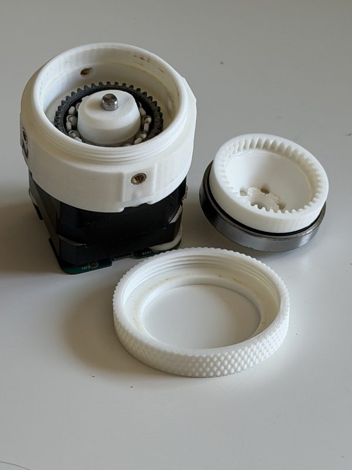

<actuators/> / <archive/>
<archive/>
Revisions we've moved on from. Nothing here is deleted and nothing here is broken: the CAD is still downloadable, the bills of materials still load, the repos are still public, and the test data is still the test data. If you printed one of these, it keeps working and so does its page.
We archive a revision when a newer one replaces it, not when it stops being good. Sometimes the older drive is still the better choice, so read the note on each one.

HD20
20:1 harmonic drive · NEMA 17 · v1.0 (RevA), August 2026
Superseded by the HDP30, which gets 30:1 from the same motor face and the same hardware. Still the only drive we have put on a load cell, so it's still the one to build if you need a torque figure you can defend.
- 20:1 reduction
- 3.3 N·m tested
- ~$3.96 hardware
<still-current/>
looking for the drive we'd build today?
The HDP30 is the current revision: 30:1, same NEMA 17 face, same bill of materials, thinner stack. Everything we're actively developing lives on the actuators page.
<why-keep-them/>
Because open hardware that vanishes when the author moves on isn't really open. Someone out there has an HD20 half-printed, and a dead link is a worse outcome than an out-of-date page. Every archived revision keeps its files, its measurements and its honest caveats.